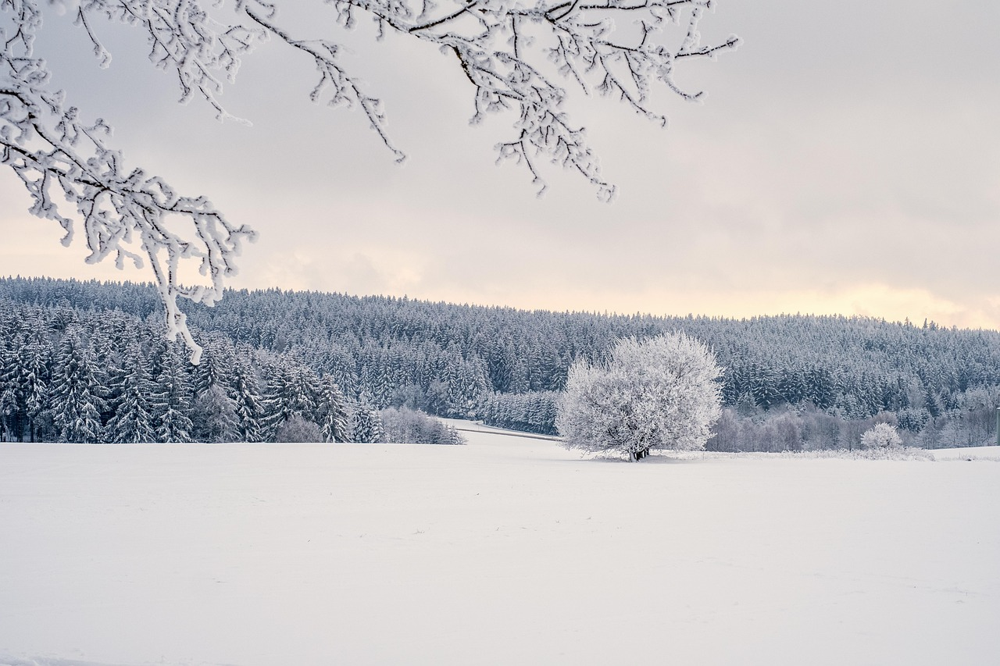

Winter is my favorite season because it brings a calm and relaxing feeling. I enjoy waking up to cool mornings and breathing the fresh air. The pleasant weather makes it easier to concentrate on my studies and enjoy outdoor activities without getting tired. I also like how the days feel peaceful, especially in the evenings when I can sit with my family and enjoy warm food together. During winter, I feel more active and energetic because the weather is not too hot. It is also a great season for celebrations, picnics, and spending quality time with friends and family. For all these reasons, winter is the season I look forward to the most every year.
